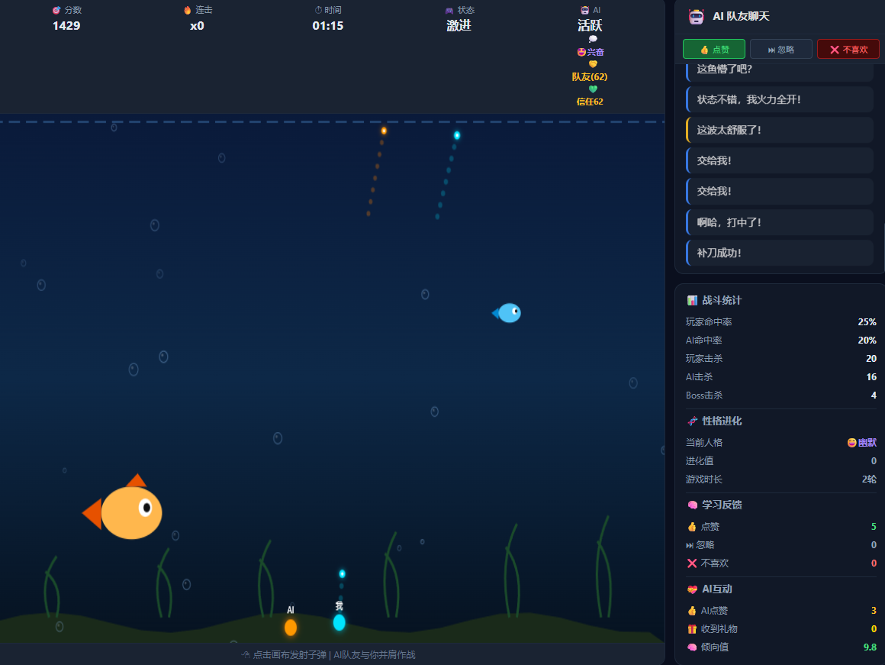
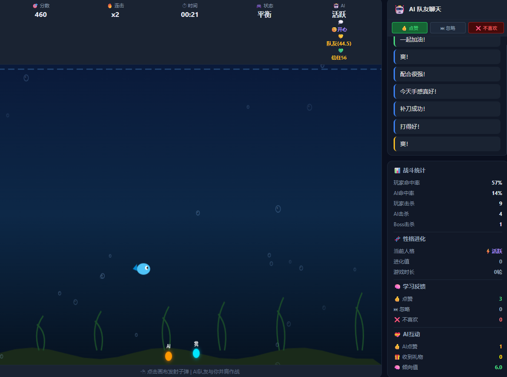

🎲 AI捕鱼游戏
🟢 Online Demo
项目介绍
这是一个基于 HTML5 Canvas 开发的 AI 捕鱼小游戏。玩家控制炮台攻击不同鱼类，并加入 AI 队友、玩家行为分析以及 AI 互动聊天系统。
项目背景
学习计算机过程中，我希望通过实际项目理解软件开发。因此尝试独立开发一个小游戏，并在基础玩法上加入 AI 功能，探索人工智能与游戏结合的可能。
技术栈
核心功能
- 🖆 AI队友系统：自动分析游戏情况，帮助玩家攻击目标。
- 🐷 鱼类系统：设计不同速度、大小和分值的鱼类，以及 Boss 挑战。
- 📥 玩家行为分析：根据玩家操作调整 AI 行为。
- 💰 AI聊天互动：增加游戏过程中的反馈和角色互动。
项目截图


开发收获
通过这个项目，我学习了：
- JavaScript 游戏逻辑设计
- Canvas动画开发
- 碰撞检测与状态管理
- AI功能在实际项目中的应用